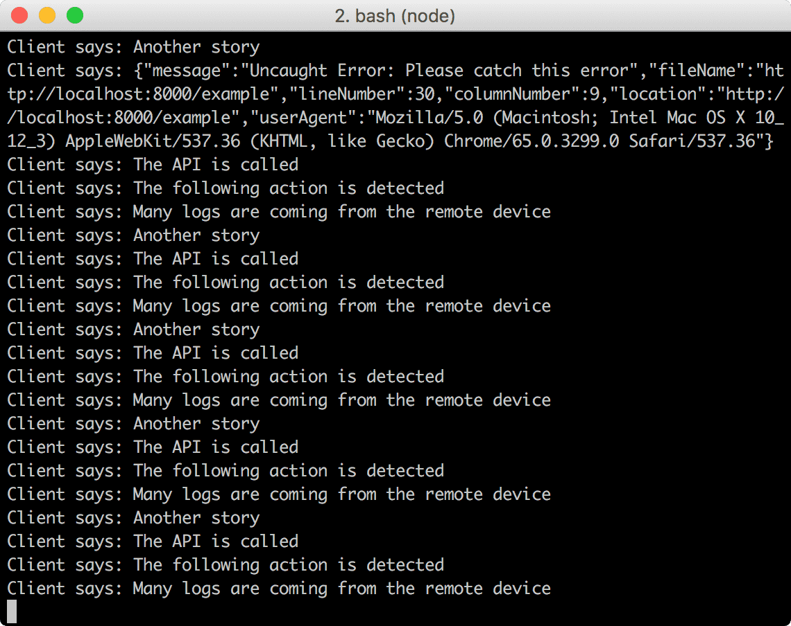
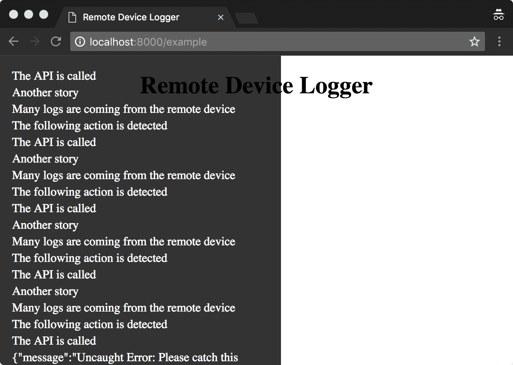

remote-device-logger
A logging tool for a remote device equipped with no inspector to send a log to the receiver via WebSocket.
 
Install
$ npm i remote-device-logger --save-dev
Usage
Start the remote-device-logger cli on the server-side. This is the log receiver.
$ remote-device-logger -p 8080
Send logs from the client-side.
import RDL from 'remote-device-logger';
const logger = new RDL({
element: document.body,
webSocketUrl: `ws://${ location.hostname }:8080`,
});
// log() method sends and displays logs.
logger.log('Client launched');
logger.log('This log message is sent by Remote Device Logger');
// remote-device-logger catches errors, too.
throw new Error('Please catch this error');
You will find logs on the client-side and the same logs in the standard output on the server-side.
Log receiver is listen on 8080
Client says: {"message":"Uncaught Error: Please catch this error","fileName":"http://localhost:8000/example","lineNumber":17,"columnNumber":7,"location":"http://localhost:8000/example","userAgent":"Mozilla/5.0 (Macintosh; Intel Mac OS X 10_12_3) AppleWebKit/537.36 (KHTML, like Gecko) Chrome/63.0.3239.90 Safari/537.36"} This log message is sent by Remote Device Logger Client launched
Client says: WebSocket opened
Run the example
Start the receiver
$ yarn receiver
Start the Web server
$ yarn example
Then, open http://localhost:8000/example